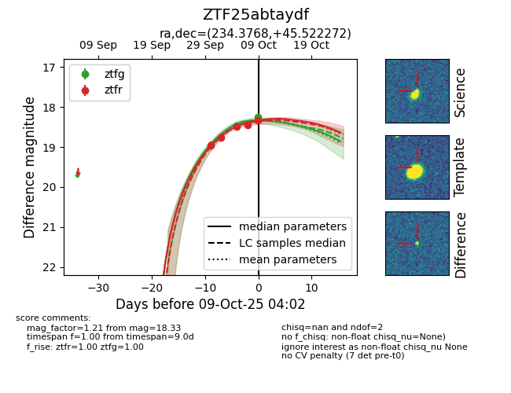
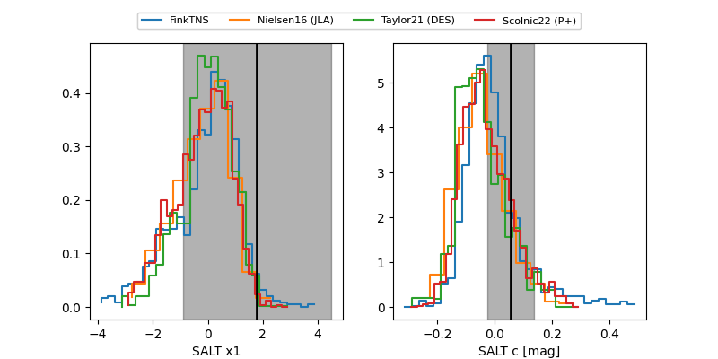

FINK: ZTF25abtaydf
Lasair: ZTF25abtaydf
ALeRCE: ZTF25abtaydf
ZTF25abtaydf (ztf,fink)
equatorial (ra, dec) = (234.3768,+45.52227)
galactic (l, b) = (73.3728,+52.39576)


last ztfg=18.26, ztfr=18.33
2 ztfg, 5 ztfr detections